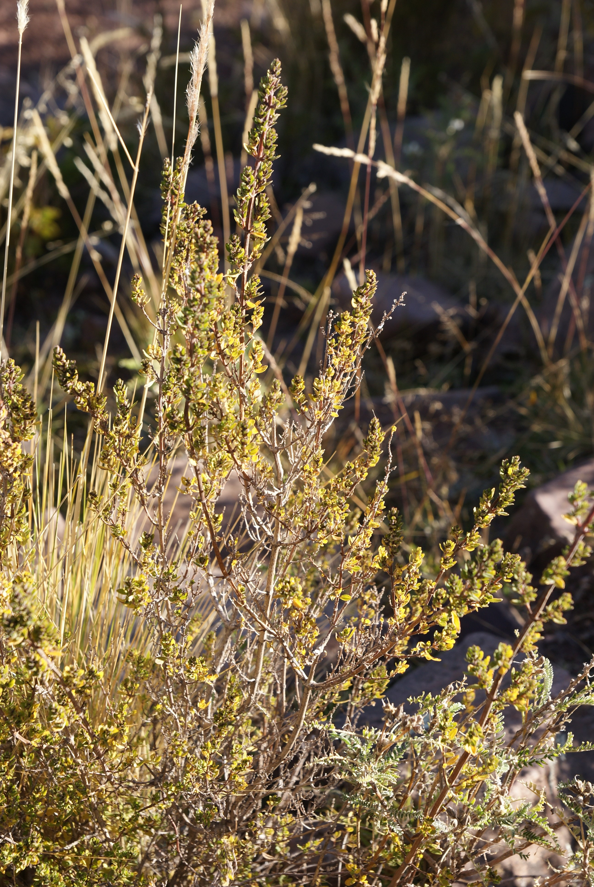
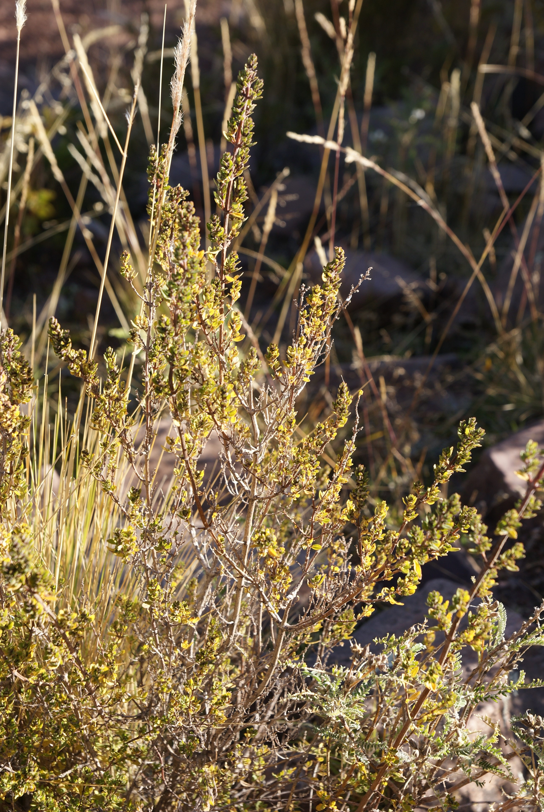

Llachon, le repos du guerrier
Au bord du lac Titicaca
L'arrivée au Pérou
Le passage au Pérou a été plutôt tranquille après l'expédition ratée à Copacabana. On rêvait de se poser quelques jours sur l'Isla del Sol, mais comme elle était à moitié fermée, les plans ont dû évoluer. Nous avons donc pris la direction de Llachon !
Donc passage de frontière, changement de monnaie, direction Puno. Puno est la ville sans intérêt côté Pérou de laquelle partent les expéditions sur les très touristiques îles de Taquilé, Amantani et Uros. Elles sont réputées pour la vie locale et leur cultures sur des structures en roseau Comme on ne voulait pas faire pour le moment d'expédition d'île en île avec une tribu de touristes, on a donc pris la direction de Llachon, un minuscule village sur la péninsule au nord de Puno.
Nous arrivons donc au terminal de bus de Puno, un taximan nous accoste en nous disant qu'il n'y aura pas de bus avant 15h30 pour la ville avant Llachon, mais qu'il nous fait la sympathique offre de 100 soles pour le trajet. Que nenni mon ami ! On se dirige vers l'autre terminal et un collectivo (minibus local) part directement après notre arrivée. Rahlalala le petit filou qui a essayé de nous entuber ! Dans ce collectivo, les gens nous sourient, et même nous parlent ! Quel contraste avec la Bolivie. Le premier rang est occupé par deux femmes avec des chapeau très très colorés à gros pompoms sur le dessus. Nouveau pays, nouvelle mentalité et surtout, on le découvrira bien assez tôt, plein d'habits tradtionnels !
70 kilomètres et deux collectivos après, nous arrivons à Llachon dans la maison d'hôte que nous avons réservé pour notre période relax : Saywa, la casa de Teodora. Nous sommes de suite accueillis par Teodora et Maritza, mère et fille gérante du lieu. On a une chambre splendide avec vue sur le lac, on est solo et l'endroit est paisible et magnifique.
La vie à Saywa
Ici pas de marché proche, ni de resto, on mangera tous nos repas à l'auberge. La cuisine est absolument délicieuse, Maritza et Teodora nous concoteront des petits plats du tonnerre, et ce sans parler du petit déj ! Encore une fois, ça nous change de la Bolivie. Mais le plus chouette, c'est qu'elles ont réellement à coeur qu'on se sente comme à la maison. On avait prévu de rester deux nuits, et nous aurons finalement prolongé à 4 nuits. Les deux premiers jours, on est les seuls dans la maison, et on mange avec Maritza et son fils Benjamin qui adore dessiner des bateaux-avions. Maritza nous parle beaucoup de la politique, de la vie de sa communauté, et plantes. C'est passionant, en voici donc un petit aperçu.
La politique
Un tout petit mot de ce qu'elle nous en raconte. Elle nous parle d'un pouvoir très centralisé sur Lima, avec très peu d'actions sur les autres provinces. En gros ils n'ent ont rien à faire. Pour exemple, la route qui nous a amené jusqu'au village n'a été construite qu'il y a deux ans. Ce sont beaucoup les touristes qui ont insisté et fait remonter les informations à Lima des besoins du village et sûrement des autres provinces également. Ainsi, des touristes ont insisté pour le développement d'un port dont le village avait besoin, ils ont ramené d'Europe des ordinateurs il y a quelques années pour l'école, ainsi que des livres pour la bibliothèque. Nous voyons à travers les yeux de Maritza un autre aspect du tourisme, positif.
Une fois que le tourisme s'est bien développé sans aide de l'Etat dans la région, des émissaires sont descendus de Lima afin de commencer à faire payer une taxe à toutes les structures hôtelières. Quand il y a du fric à se faire, y'a du monde, merci les gars ...
Les habitants n'ont que peu de moyen de pression, car lorsqu'ils manifestent, certains sont accusés de "crimes", comme de la violence sur des policiers et peuvent être jetés en prison une dizaine d'années à titre d'exemple. Encore un chouette régime politique !!
Sa communauté
Nous sommes donc dans un petit village, qui parle Quechua. Ici il faut être très poli en tant que membre de la communauté, sinon cela peut se retourner contre toi. Pour le mariage, homme et femme choisissent un partenaire, et leur couple est à l'essai 3 ans. Pendant ces trois ans, ils vivent ensemble et voient si cela peut marcher. Si pendant ces trois ans, ils ont un enfant, ils seront obligés de se marier. Sinon ils peuvent choisir de le faire ou non. Mais il n'est pas possible d'enchaîner 15 périodes d'essai non plus. La deuxième (avec un second partenaire), doit être la bonne.
Lorsqu'on se marie, il y a deux cérémonies, une dans la famille de la femme, l'autre dans celle du mari avec un système de cadeaux aux familles. Les mariés doivent choisir une sorte de parrain de mariage qui les suivra tout au long de leurs vies. Le parrain peut dire non si un des mariés n'a pas été assez poli et respecteux envers la communauté. Pour les mêmes raison, le mariage peut être assez violent si il y a non respect envers les gens du village.
Le parrain est questionné tout au long de la vie du couple sur plein de problématiques. Chacun d'entre eux peut aller le voir pour des problèmes dans le couple ou avec les enfants. Si les problèmes persistent et qu'ils ne sont pas réglés, il peut y avoir une punition physique des mariés, à genou. De cette manière, les gens sont obligés de changer, de faire des compromis et de faire fonctionner leur couple. Il n'y a pas de divorce dnas le village, ceux qui divorcent sont ceux qui partent à "la ville".
La santé et la médecine
Elle nous parle aussi du système de santé, le public qui est extrèmement mauvais (les professionnels de santé n'en auraient rien à cirer des patients) et le privé qui est très cher. Alors ils ont beaucoup recours à la médecine tradionnelles. Elle nous parle des plantes, celles contre le mal de ventre, celles pour les femmes, celles pour le mal d'altitude. Elle nous dit qu'ils testent beaucoup sur eux les différentes techniques et plantes lorsqu'un nouveau mal apparait. Le savoir se transmet entre les grands mères et les générations qui suivent. Parfois, les hôpitaux ont recours aux services des "guérisseurs" du village. Ils font des échographies par cochon d'inde. Quand les différents remèdes tentés ne fonctionnent pas, le cochon d'inde est attaché et posé sur l'endroit douloureux de la personne. Moins de deux heures, il ne faut pas qu'il meurre. Puis le sang du cochon d'inde est étudié selon leurs techniques, et il est examiné afin de voir quel organe a récupéré la maladie du patient. Cela permet de savoir de quoi la personne est malade. Elle m'assure que c'est très efficace. Mais je me vois mal retourner en France et proposer cette pratique :-D
Les grands mères sont aussi très douées avec les femmes enceintes. En touchant le poigner, elles peuvent dire si le foetus a le cordon enroulé autour du cou, ou s'il se présente en tête ou en siège. Elles peuvent détecter par palper beaucoup de soucis me dit Maritza. Elles font les versions à la maison, en donnant aussi des plantes. Elles s'occupent également des prolapsus, en remettant les organes manuellement a leur place, et avec des cataplasmes de plantes et bien sûr du repos. Pour la femme enceinte comme pour la femme avec un prolapsus, il faudra aussi pour aider les poser sur un grand châle et les faire légèrement rouler d'un côté à l'autre. Beaucoup de méthodes empiriques, dévellopées au cours des années.
On assistera même à un massage live par son oncle, car le troisième jour, un français Clément arrivera avec une entorse. Massage d'heure avec une crème aux plantes (évidemment) de sa composition. Le lendemain, il était déja bien mieux ! Magique la kiné locale !
On s'occupe à Llachon !
On a vite été rejoint par Clém et Ambre, un couple bien sympa de français (y'a que des français en Amérique du sud ou quoi ??). Et notre programme a été traaaanquille. Le matin : dodo, petit déj, bain de soleil, dessin, blog, couture (chaussettes, chaussure, culottes, pantalon, j'ai dû recoudre tout le contenu de mon sac). L'après midi, petite ballade peinarde. On est montés sur la colline à côté du village, traversé des petits hameaux. On a rencontré des éleveurs, des troupeaux de moutons, des ânes. Le village est typique, les gens dehors, et tout le monde dit bonjour et on échange chaque fois quelques mots. Le paradis ! Sur les hauteurs, les vues sur le lac et les îles sont magnifiques, et nos fins d'après midi à la plage fantestiques. Et puis comme on ne court pas, on prend conscience de la chance qu'on a : chiller au bord du lac Titicaca, ça a de la gueule cuand même !
Un matin, Maritza nous prépare un atelier très spécial. Ce matin, nous allons apprendre à filer la laine, et à tisser. On pratiquera le tissage à partir de laine brute, pour produire un fil, puis pour joindre deux fils ensemble. On verra comment trouver la plante qui sert à faire la lessive et le shampoing afin de laver notre laine et lui oter l'odeur de mouton. Et enfin on essayera de comprendre comment on fait pour faire du tissage. Je pense avoir passé 3 heures à essayer de comprendre, sans succès. Beaucoup trop complexe cette histoire là.
Un début de séjour au Pérou du tonnerre donc, merci à Maritza, Teodora et Benjamin,
Arequipa, nous voila, On a hâte !
Maïlys

 



 <\div>
<\div>